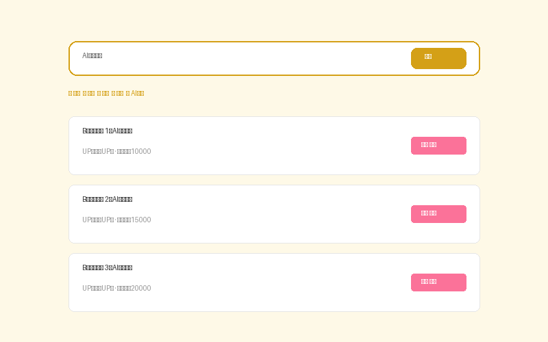

Universal Search Engine SDK v2.0 · 15个搜索引擎 · 多平台视频解析 · 内嵌播放器 · 页面内展示不跳转
SDK文件清单：
search-api.js — 纯英文接口文件，所有路径通过 UniversalSearch.config 配置变量管理
search.css — 独立样式文件
<!DOCTYPE html>
<html>
<head>
<link rel="stylesheet" href="search.css">
</head>
<body>
<div class="ss-search-bar">
<input id="ss-input" type="search" placeholder="输入关键词或视频链接">
<button id="ss-go" class="ss-btn ss-btn-primary">搜索</button>
</div>
<div id="ss-results"></div>
<div id="ss-player"></div>
<script src="search-api.js"></script>
</body>
</html>
▲ 搜索结果在搜索框下方自动展开，视频/音乐/文章/网页全部页面内展示
// 修改容器ID
UniversalSearch.config.containers.input = "my-input";
UniversalSearch.config.containers.results = "my-results";
// 修改搜索引擎URL
UniversalSearch.config.engines.baidu = "https://www.baidu.com/s?wd=";
// 修改API地址
UniversalSearch.config.api.biliView = "https://api.bilibili.com/x/web-interface/view?";
// 配置离线AI嗅探后端（可用GitHub Pages托管）
UniversalSearch.config.aiBackend = "https://你的用户名.github.io/api/sniff";
// 配置回调函数
UniversalSearch.config.callbacks.onVideoPlay = function(data) {
console.log("Play:", data.bvid, data.title);
};| 引擎 | 配置key | URL模板 |
|---|---|---|
| 百度 | baidu | https://www.baidu.com/s?wd= |
| 谷歌 | https://www.google.com/search?q= | |
| 必应 | bing | https://www.bing.com/search?q= |
| 搜狗 | sogou | https://www.sogou.com/web?query= |
| 360 | so360 | https://www.so.com/s?q= |
| 头条 | toutiao | https://so.toutiao.com/search?keyword= |
| 微信 | https://weixin.sogou.com/weixin?type=2&query= | |
| 知乎 | zhihu | https://www.zhihu.com/search?type=content&q= |
| B站 | bilibili | https://search.bilibili.com/all?keyword= |
| 抖音 | douyin | https://www.douyin.com/search/ |
| 快手 | kuaishou | https://www.kuaishou.com/search/video?searchKey= |
| 优酷 | youku | https://so.youku.com/search_video/q_ |
| 爱奇艺 | iqiyi | https://so.iqiyi.com/so/q_ |
| 腾讯视频 | tencentvideo | https://v.qq.com/x/search/?q= |
| 西瓜 | xigua | https://www.ixigua.com/search/ |
粘贴B站链接或BV号，自动解析并在页面内iframe播放，显示全部元数据：
UniversalSearch.search("https://www.bilibili.com/video/BV1xx411c7mD");
UniversalSearch.search("BV1xx411c7mD");
UniversalSearch.search("av170001");
// 支持番剧ep/ss/md号、收藏夹ml号、UP主uid抖音/快手/优酷/腾讯视频/爱奇艺/西瓜自动识别，展示播放和复制按钮。
页面中存在 id="ss-results" 容器时，搜索自动进入聚合模式，分5个标签页：
B站API真实搜索，卡片列表，点击立即播放
网易云/QQ音乐/酷狗iframe内嵌，页面内搜索播放
知乎/微信/必应iframe内嵌，多引擎切换
必应搜索iframe页面内展示（百度禁止iframe，新窗口打开）
对接本地AI后端或GitHub Pages托管接口，自动嗅探全网资源
💡 关键：所有搜索结果都在搜索框下方展开显示，不会跳转外部浏览器。视频在页面内播放，音乐在页面内播放，文章在页面内阅读。
const { ipcMain, shell, clipboard } = require('electron');
ipcMain.handle('search', async (e, {query, engine}) => {
const url = UniversalSearch.config.engines[engine] + encodeURIComponent(query);
// 在应用内webview展示，不跳转外部
e.sender.send('open-webview', url);
return {ok:true, url};
});
ipcMain.handle('copy', async (e, text) => {
clipboard.writeText(text);
return {ok:true};
});webView.settings.javaScriptEnabled = true
webView.addJavascriptInterface(JsBridge(), "native")
webView.loadUrl("file:///android_asset/search.html")
class JsBridge {
@JavascriptInterface fun openUrl(url: String) {
// 在WebView内加载，不跳转外部浏览器
webView.loadUrl(url)
}
@JavascriptInterface fun copyText(text: String) {
val cm = getSystemService(Context.CLIPBOARD_SERVICE) as ClipboardManager
cm.setPrimaryClip(ClipData.newPlainText("text", text))
}
}未配置本地AI后端时，可使用GitHub Pages托管搜索接口：
// 1. 在GitHub创建仓库，开启Pages
// 2. 创建 api/sniff/index.html (或用Cloudflare Worker)
// 3. 配置SDK：
UniversalSearch.config.aiBackend = "https://你的用户名.github.io/api/sniff";
// 4. 接口返回格式：
// { videos:[], musics:[], articles:[], ai_summary:"" }
// 5. 也可用Cloudflare Worker做代理：
// addEventListener('fetch', event => {
// event.respondWith(handleRequest(event.request))
// })⚠️ 注意：GitHub Pages是静态托管，无法直接做后端代理。建议使用Cloudflare Workers或Vercel Functions做搜索接口代理，前端通过 UniversalSearch.config.aiBackend 调用。
| 方法 | 说明 | 示例 |
|---|---|---|
| UniversalSearch.search(query, engine, options) | 主搜索入口 | search("关键词", "bing", {aggregate:true}) |
| UniversalSearch.detectVideo(url) | 识别视频平台 | detectVideo("https://...") |
| UniversalSearch.biliResolve(bvid, area) | B站解析播放 | biliResolve("BV1xx...", div) |
| UniversalSearch.aggregate(keyword, area) | 聚合搜索 | aggregate("关键词", div) |
| UniversalSearch.copyText(text) | 静默复制 | copyText("文本") |
| UniversalSearch.config | 配置对象 | config.engines.baidu = "..." |